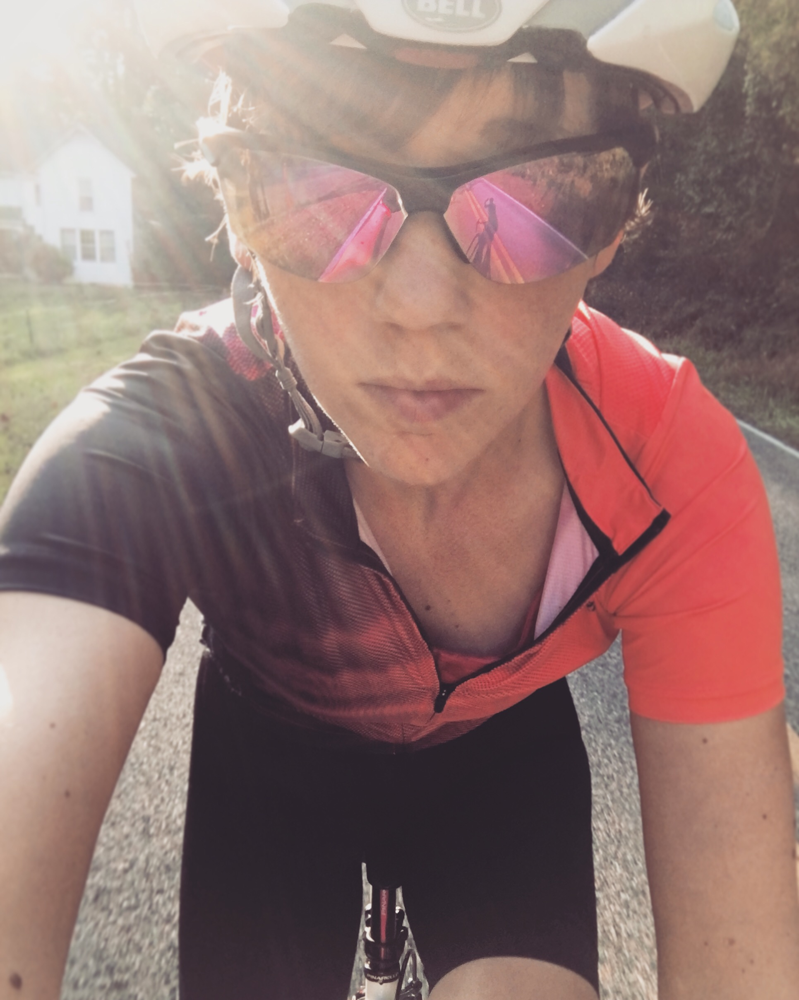

I'm a new mom, and I really like riding bikes.
Momma Bear Rides Bikes is an idea I have for a nonprofit cycling clothing line that promotes cycling safety and
the humanization of cyclists.
What if the first thought drivers had when they saw a cyclist was, "That person is a mom,"
or, "That person is important to somebody?" Would it make them slow down? Would it make them
drive more cautiously? Would they take the extra ten seconds to share the road?
I think when we see cyclists as just "cyclists," rather than people -- individuals -- it can fuel
that road rage, but if drivers see cyclists as human-beings first, maybe lives could be saved.
Note: Website still in progress!